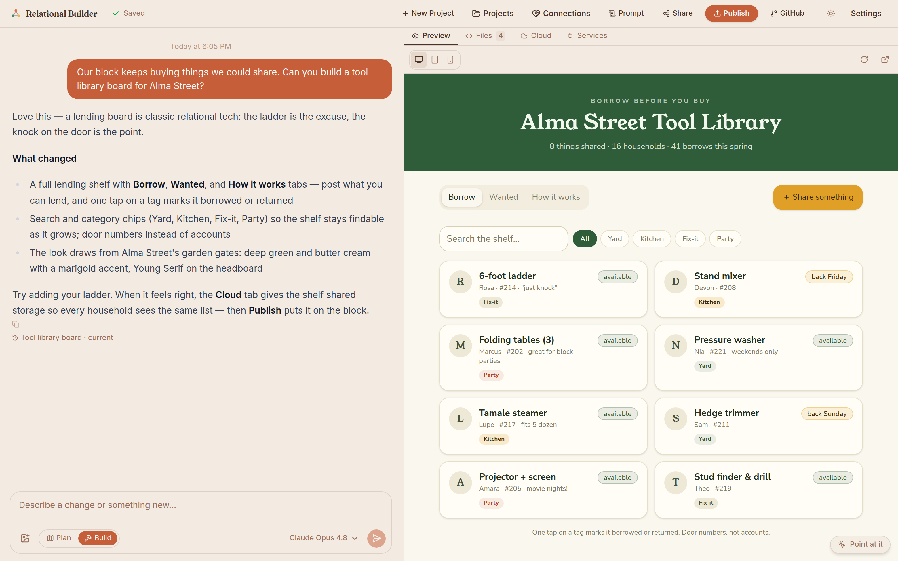
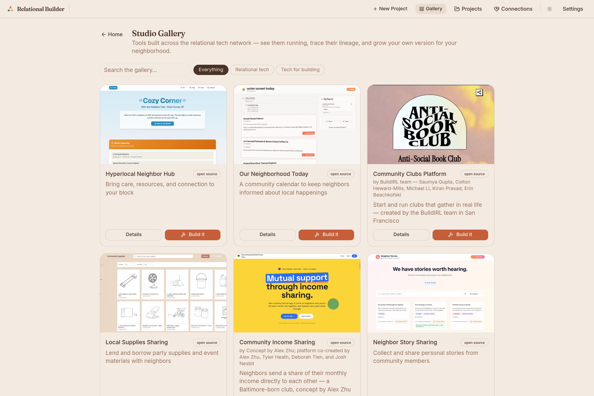
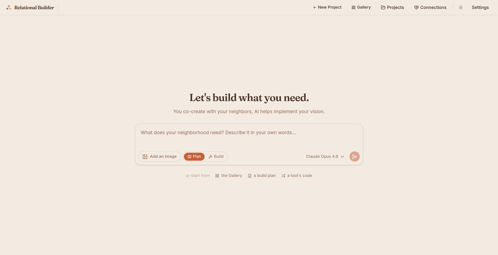

Describe what your neighborhood needs, in your own words, and build it together with AI — grounded in the relational tech commons, offered back to the commons.
Relational Builder is a web-based app builder for the tools neighborhoods actually need: the calendar people can find, the lending library for the block, the meal train for a recovering neighbor, the flyer for the laundromat corkboard. It is not a general-purpose app factory — every conversation searches what real neighborhoods have already learned, so each build starts from a place, not a blank page.

The loop in one screen A neighbor asked for a tool-lending board for their street; the app runs live in the preview as the conversation shapes it.
AI app builders are suddenly everywhere. What makes this one relational is everything wrapped around the code.

The Studio Gallery “Build it” doesn't clone code — it distills the tool into a place-adaptable prompt, so each neighborhood grows its own version.
Community work is 90 percent presence and relationship. Technology is the last 10.
What AI changes is who can do that 10 percent. A year ago, a neighborhood tool meant finding (and usually paying) a developer, or settling for a platform built for everyone and fitted to no one. Now the distance between “someone should make…” said out loud at a block party and a working tool neighbors are using is one conversation. Relational Builder exists to make sure that new capability lands relationally: grounded in principles, accountable to a place, feeding a commons no one can enclose — instead of arriving as one more extractive platform with a neighborhood-shaped logo.
The details are deliberate. Free community access means the person who hosts the potluck — not just the person with the API key — can build. Consent-first sharing and steward review mean the commons grows with care. Lineage on everything means credit travels, and remixing is honored as the way good tools spread: locality to locality, keeping what fits, changing what doesn't.
The workshop for a new kind of work.
Our white paper, We can build what we need, describes a new role — the local relational technologist — and an experiment: 200 fully funded builders across San Francisco, Baltimore, and rural America, each proving the role can pay for itself close to home. Relational Builder is that role's workshop. It is how a technologist directs AI to write software overnight after a day of community work; how the hundred neighbors around them co-create instead of just consuming; and how the recipes travel, so a meal train grown on one street replants in Novi Sad, Tampere, or Hialeah without anyone scheduling a call.
Every piece of the Builder points at that scale: prompts as seeds so tools spread without dependence, studios so organizations can host their own gardens, open licenses so nothing gets enclosed, and a commons that gets richer with every build offered back. The software is open source, the practice is teachable, and the door is open — anyone can request an account, and a real person answers.

The front door “What does your neighborhood need? Describe it in your own words.” Plan first or build straight away — or start from the Gallery, a build plan, or a tool's code.
relationalbuilder.org · github.com/The-Relational-Technology-Project/relational-builder · josh@relationaltechproject.org